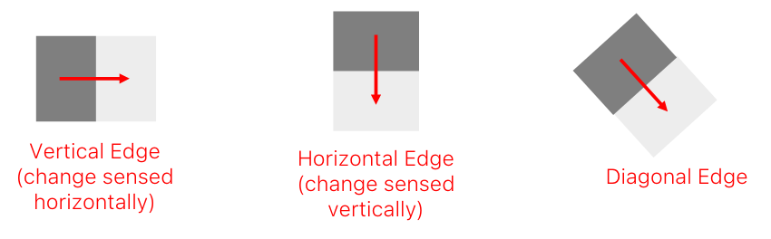
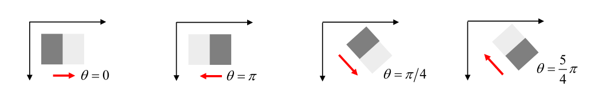
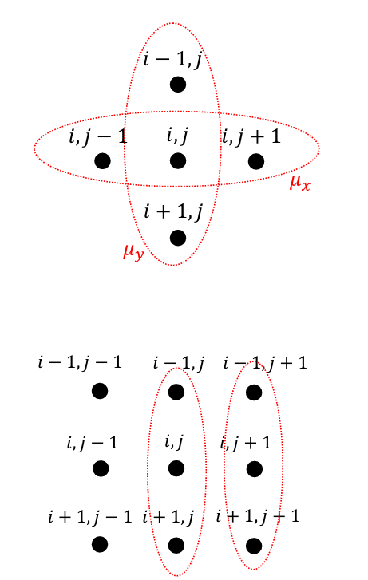
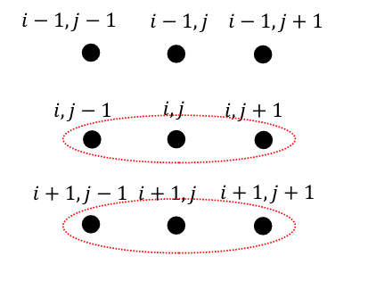
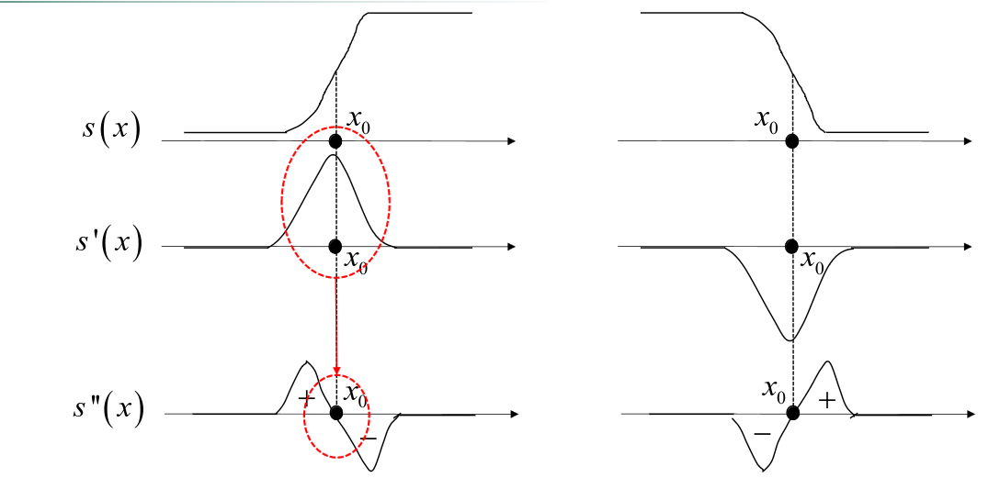
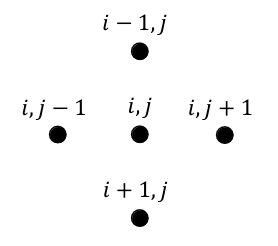

Edges are pixels that separate two (or more) regions of different intensities in the image, often, those regions denote objects.
1D step-edge
It finds the edges by looking at the derivative of the change of intensities: if there is a big change in the intensity, the derivative of the intensity function has a spike, and we can infer from it if there are edges.
2D step-edge
Like 1D step-edge, but we take into account also the direction.

∇I(x,y)I(x,y)Ix+Iyatanatan2=∂x∂I(x,y)i+∂y∂I(x,y)j=∂x∂I(x,y)+∂y∂I(x,y)==∣∇I(x,y)∣=ix2+Iy2=Th(IxIy)direction(Ix,Iy)direction and sign

Discrete approximation of the gradient
We can use either backwar, forward or central differences:
∂x∂I(x,y)≅Ix(i,j)=I(i,j)−I(i,j−1),∂y∂I(x,y)≅Iy(i,j)=I(i,j)−I(i−1,j)backward∂x∂I(x,y)≅Ix(i,j)=I(i,j+1)−I(i,j),∂y∂I(x,y)≅Iy(i,j)=I(i+1,j)−I(i,j)backwardIx(i,j)=I(i,j+1)−I(i,j−1),Iy(i,j)=I(i+1,j)−I(i−1,j)central
And we can approximate the magnitude using different approximations:
∣∇I∣=Ix2+Iy2∣∇I∣+=∣Ix∣+∣Iy∣∣∇I∣max=max(∣Ix∣,∣Iy∣)
The last one is faster and more invariant with respect to edge direction.
Edges and noise
In real scenarios, we cannot assume to have edges that smooth due to Noise
.
So, we cannot use derivatives because they are not robust against noise, and we cannot use standard de-noising Image filters
because they blur the image and make the edge detection process more complicated.
As a solution, we can compute the difference of averages rather than making the same in different steps (and use Convolution
to do so).
⎩⎨⎧μx=31[I(i,j−1)+I(i,j)+I(i,j+1)]μy=31[I(i−1,j)+I(i,j)+I(i+1,j)]averagesIxˉ(i,j)=μy(i,j+1)−μy(i,j)=31[I(i−1,j+1)+I(i,j+1)+I(i+1,j+1)−I(i−1,j)−I(i,j)−I(i+1,j)]⇒31−1−1−1111Iyˉ(i,j)=μx(i+1,j)−μx(i,j)=31[I(i+11,j−1)+I(i+1,j)+I(i+1,j+1)−I(i,j−1)−I(i,j)−I(i,j+1)]⇒31[−11−11−11]


Prewitt operator
Given the same smoothing, we would wish to approximate the partial derivatives by centra differences
Ixˉ(i,j)=μy(i,j+1)−μy(i,j−1)⇒31−1−1−1000111Iyˉ(i,j)=μx(i+1,j)−μx(i−1,j)⇒31−101−101−101
Sobel operator
At the same time, we can weight central pixels more
μx(i,j)=41[I(i,j−1)+2I(i,j)+I(i,j+1)]Ixˉ(i,j)=μy(i,j+1)−μy(i,j−1)⇒41−1−2−1000120μy(i,j)=41[I(i−1,j)+2I(i,j)+I(i+1,j)]Iyˉ(i,j)=μx(i+1,j)−μx(i−1,j)⇒41−101−202−101
NMS
Deciding a threshold value to detect edges on the gradient function can be difficult. A better approach is finding the maximum local value on the image.
The magnitude of the gradient has to be estimated at points which do not belong to the discrete pixel grid. Such values can be estimated by linear interpolation of those computed at the closest points belonging to the grid
Canny’s Edge Detector
Canny proposed to set forth quantitative criteria to measure the performance of an edge detector and then to find the optimal filter with respect to such criteria:
Good Detection: the filter should correctly extract edges in noisy images
Good localization: the distance between the found edge and the “true” edge should be minimum
One Response to One Edge: the filter should detect one single edge pixel at each “true” edge
A straightforward Canny edge detector can be achieved by:
Look for zero-crossing of the second derivative of the signal to locate edges (instead of the peaks of the first derivative)

Since computing the second derivative is pretty expensive, we can approximate them using forward and backward differences:
IxxIyy∇2≅Ix(i,j)−Ix(i,j−1)=I(i,j−1)−2I(i,j)+I(i,j+1)≅Iy(i,j)−Ij(i−1,j)=I(i−1,j)−2I(i,j)+I(i+1,j)=0101−41010

(we can use a Convolution
to approximate the second gradient)
Laplacian of Gaussian (LOG)
To have a better edge detection we must smooth the image, the log edge detection work as follows:
Unlike those based on smooth derivatives, the LOG edge detector allows the degree of smoothing to be controlled (i.e. by changing the σ parameter of the Gaussian filter).
it Is basically impossible to have 0 as a value in the second derivative in correspondence of the edges, so, a much more realistic approach is to search to a change in sign in the pixel value and use the most close-to-zero value as the edge.